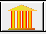

Next: Defining account types Up: Creating a banking model Previous: Creating a bank

Double click or right click on the  block to bring up the Godley Table:
When a Godley Table is first loaded, it has room for one account to be
defined. To create an additional account, click on the
 button above the first account. One
click then adds another column in which an additional account can be
defined.
button above the first account. One
click then adds another column in which an additional account can be
defined.

A column can be deleted by clicking on the  button above the column.
button above the column.
To define bank accounts in the system you enter a name into the row
labeled ``Flows V / Stock Variables ->''. For example, if you were
going to define a banking sector that operated simply as an
intermediary between ``Patient'' people and ``Impatient'' people--as
in the Neoclassical ``Loanable Funds'' model-you might define the
following accounts:

As you enter the accounts, they appear at the bottom of the Bank block on the canvas:

Russell Standish 2016-12-01